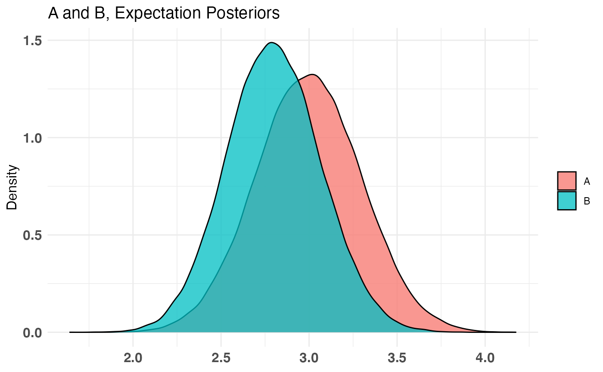
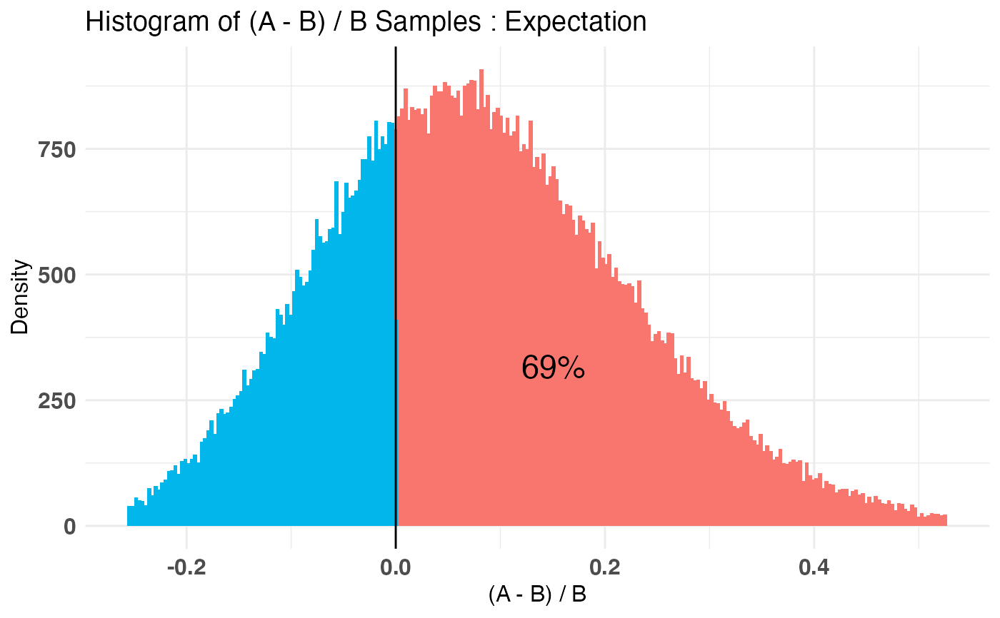

Combine two (or any number, in succession) bayesTest objects into a new arbitrary posterior distribution.
The resulting object is of the same class.
combine(bT1, bT2, f = `+`, params, newName)
| bT1 | a bayesTest object |
|---|---|
| bT2 | a bayesTest object |
| f | a binary function (f(x, y)) used to combine posteriors from bT1 to bT2 |
| params | a character vector of length 2, corresponding to names of the posterior parameters you want to combine; defaults to first posterior parameter if not supplied |
| newName | a string indicating the name of the new 'posterior' in the resulting object; defaults to string representation of f(params[1], params[2]) |
a bayesTest object with the newly combined posterior samples.
The generics `+.bayesTest`, `*.bayesTest`, `-.bayesTest`, and `/.bayesTest` are shorthand for combine(f = `+`), combine(f = `*`), combine(f = `-`), and combine(f = `/`).
A_binom <- rbinom(100, 1, .5) B_binom <- rbinom(100, 1, .6) A_norm <- rnorm(100, 6, 1.5) B_norm <- rnorm(100, 5, 2.5) AB1 <- bayesTest(A_binom, B_binom, priors = c('alpha' = 1, 'beta' = 1), distribution = 'bernoulli') AB2 <- bayesTest(A_norm, B_norm, priors = c('mu' = 5, 'lambda' = 1, 'alpha' = 3, 'beta' = 1), distribution = 'normal') AB3 <- combine(AB1, AB2, f = `*`, params = c('Probability', 'Mu'), newName = 'Expectation') # Equivalent to AB3 <- AB1 * grab(AB2, 'Mu') # To get the same posterior name as well AB3 <- rename(AB3, 'Expectation') # Dummy example weirdVariable <- (AB1 + AB2) * (AB2 / AB1) weirdVariable <- rename(weirdVariable, 'confusingParam') print(AB3)#> -------------------------------------------- #> Distribution used: combined #> -------------------------------------------- #> Using data with the following properties: #> A A B B #> Min. 0.00 2.034456 0.00 -1.040968 #> 1st Qu. 0.00 5.253974 0.00 3.650038 #> Median 0.00 6.029424 1.00 4.876042 #> Mean 0.43 6.193758 0.63 5.117383 #> 3rd Qu. 1.00 7.232727 1.00 6.851740 #> Max. 1.00 11.206724 1.00 10.962007 #> -------------------------------------------- #> Conjugate Prior Distribution: #> Conjugate Prior Parameters: #> [1] "Combined distributions have no priors. Inspect each element separately for details." #> -------------------------------------------- #> Calculated posteriors for the following parameters: #> Expectation #> -------------------------------------------- #> Monte Carlo samples generated per posterior: #> [1] 1e+05summary(AB3)#> Quantiles of posteriors for A and B: #> #> $Expectation #> $Expectation$A #> 0% 25% 50% 75% 100% #> 1.465084 2.456112 2.662991 2.872966 3.972414 #> #> $Expectation$B #> 0% 25% 50% 75% 100% #> 1.954614 3.015963 3.207659 3.403317 4.620632 #> #> #> -------------------------------------------- #> #> P(A > B) by (0)%: #> #> $Expectation #> [1] 0.09878 #> #> -------------------------------------------- #> #> Credible Interval on (A - B) / B for interval length(s) (0.9) : #> #> $Expectation #> 5% 95% #> -0.35161381 0.05196047 #> #> -------------------------------------------- #> #> Posterior Expected Loss for choosing B over A: #> #> $Expectation #> [1] 0.2263177 #>plot(AB3)